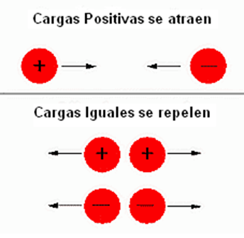
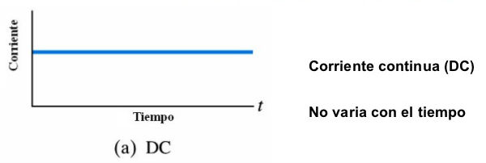

ELECTRICIDAD
La electricidad es un fenómeno físico, cuyo propulsor son las cargas eléctricas y la energía que estas promueven puede manifestarse ya sea en expresiones dentro del ámbito físico, luminoso, así como contemplando el área mecánica o térmica.
La electricidad tendrá origen por las cargas eléctricas que estén reposo o en movimiento y por las interacciones que también se dan entre estas. Existen dos tipos de cargas eléctricas, unas positivas (portones) y otras negativas (electrones).
CARGA ELÉCTRICA
Esta es una propiedad que permite al material interactuar de forma electromagnética. Esto se manifiesta a través de dos fuerzas opuestas: atracción y repulsión. Por ende, existen dos tipos de carga eléctrica: positiva y negativa, y está determinada por el tipo de átomos que posee un material. Sin embargo, un cuerpo puede transferir y recibir carga de otro cuerpo a través de un movimiento, la fricción.
Distintos tipos de carga se atraen, mientras que las de la misma clase se repelen. La distancia que exista entre las cargas determinará la fuerza de atracción o repulsión. Estas teorías fueron confirmadas en las investigaciones de Coulomb. Son la base de las leyes que rigen al universo, al planeta, a los objetos en ella, y sus movimientos.

CAMPO ELÉCTRICO
Este concepto define el espacio que rodea a un objeto cargado, bien sea positiva o negativamente. Es decir, la superficie en donde puede ejercer una influencia si entra en contacto con otra carga de cualquier tipo. Un dato resaltante acerca del campo eléctrico, es que este puede extenderse al infinito. Su valor puede ser cuantificado, determinando con precisión la fuerza que ejerce en cargas ubicadas inclusive en otros campos.
A diferencia de la gravedad, este campo puede actuar a través de las dos fuerzas opuestas de atracción y repulsión. La intensidad de carga en un lugar se determina a través del cálculo de la fuerza percibida a esta distancia. Esto, tomando como punto de referencia el lugar de origen del campo eléctrico. La fuerza entonces se convierte en un vector, con dirección y magnitud. Los cálculos realizados, entonces, pueden indicar el sentido de una corriente eléctrica.

CORRIENTE ELÉCTRICA
la corriente eléctrica es el flujo neto de carga eléctrica que circula de forma ordenada por un medio material conductor. Dicho medio material puede ser sólido, líquido o gaseoso y las cargas son transportadas por el movimiento de electrones o iones. Más concretamente:
- En los sólidos se mueven los electrones.
- En los líquidos los iones.
- Y en los gases, los iones o electrones.
Aunque esto es así, el caso más general de corriente eléctrica es el que se produce por el movimiento de los electrones dentro de un conductor, así que suele reservarse este término para este caso en concreto.

CORRIENTE CONTINUA
Corriente continua: Es aquella en la que su valor o magnitud permanece constante en el tiempo y además, su sentido no varía.
La producen las baterías, las pilas y las dinamos. Entre los extremos de cualquiera de estos generadores se genera una tensión constante que no varía con el tiempo. Por ejemplo, si la pila es de 12 voltios, todo los receptores que se conecten a la pila estarán siempre a 12 voltios (a no ser que la pila este gastada y tenga menos tensión).

CORRIENTE ALTERNA
Corriente alterna: Es aquella en la que su sentido de movimiento varía con el tiempo y sus valores o magnitudes no permanecen constantes.
Es producida por los alternadores y es la que se genera en las centrales eléctricas. La corriente que usamos en los enchufes o tomas de corriente de las viviendas es de este tipo. Este tipo de corriente es la más habitual porque es la más fácil de generar y transportar.
El alternador hace girar sus espiras (rotor) 50 veces cada segundo generando una onda de corriente y tensión senoidal o sinusoidal. Esta velocidad de giro se dice que tiene una frecuencia de 50Hz (vueltas por segundo). En américa es de 60Hz.